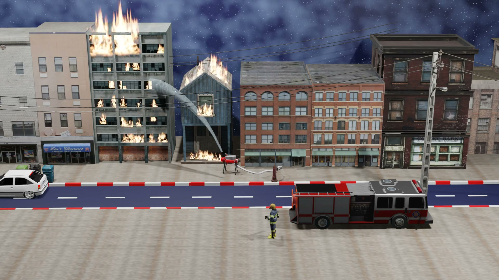

Blender project
Firefighter Dog Simulation
A 3D Blender simulation featuring a firefighter dog character.

About the project
This project is a 3D simulation created in Blender around a firefighter dog character responding to a building fire. The scene combines an urban environment, a fire truck, flames and a water hose to create an emergency-response scenario.
I used Blender to stage the scene, animate the intervention and create a visual narrative around the firefighter dog. The project explores 3D modeling, animation, lighting and simulation in a single emergency scenario.
Project objectives
- Design a 3D emergency-response scene in Blender.
- Create a firefighter dog character and integrate it into the simulation.
- Build an urban environment with buildings, a fire truck and street elements.
- Animate a firefighting scenario with flames and a water hose.
- Use lighting and camera composition to make the scene clear and immersive.
Simulation demo
Watch the firefighter dog simulation in action.
Technologies used
Blender3D ModelingAnimationSimulation
System architecture
The simulation is organised as a 3D Blender scene with several elements working together:
- Environment an urban street scene with buildings and road elements.
- Emergency assets the firefighter dog, fire truck, water hose and fire effects.
- Animation and simulation character movement, water projection, flames and camera framing.
- Rendering — lighting, materials and final video output for the visual presentation.
Key features
- Firefighter dog: a central character designed for the emergency scenario.
- Fire scene: animated building flames that create the main challenge of the simulation.
- Emergency intervention: a fire truck and water hose used to stage the response.
- Urban environment: a complete city-street composition for the scene.
- Visual storytelling: camera composition and lighting that guide the viewer through the intervention.